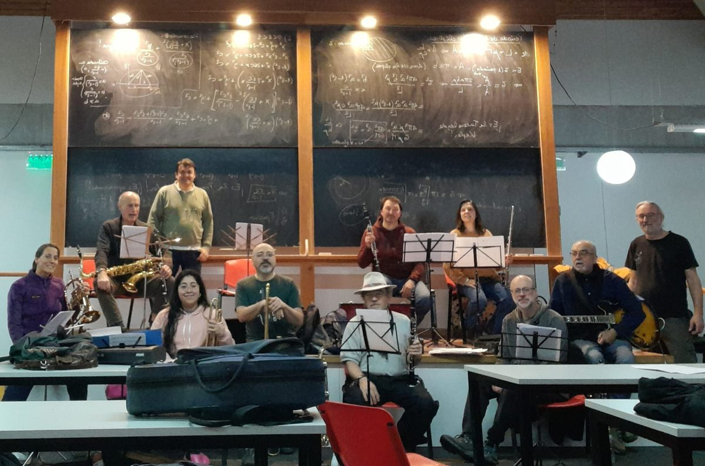
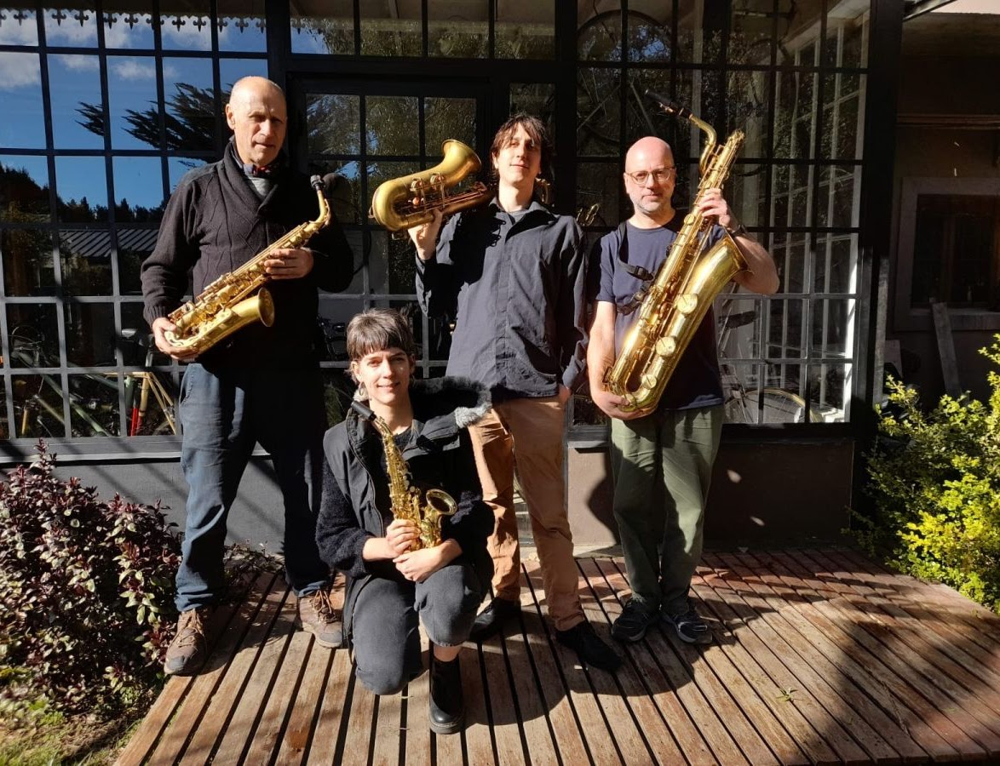
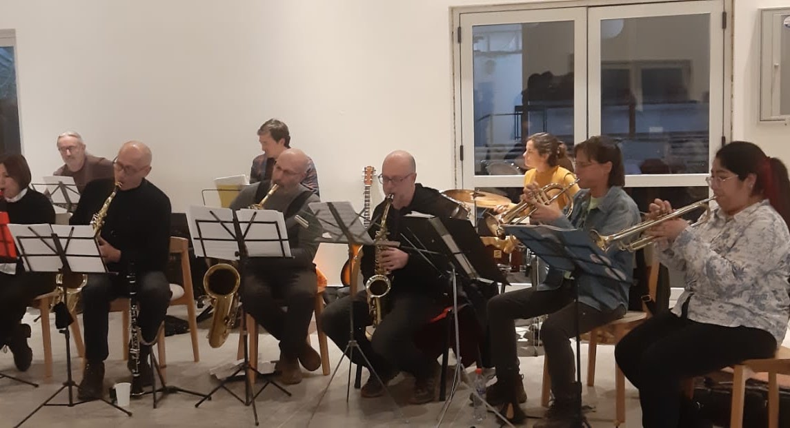
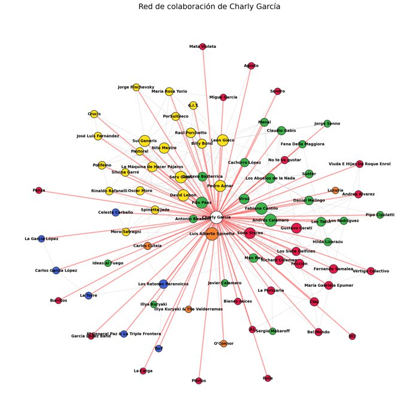

Más allá de la investigación
Hobbies y proyectos personales que hago en mi tiempo libre, aparte de mi trabajo académico. Para los curiosos.
Música
Toco el saxo alto (Buffet Crampon) y el barítono (Keilwerth). Toco en la “Banda Atómica” y participé en varias big bands y cuartetos de saxos locales: jazz, blues, tango, choro, rock, folklore y música clásica.



Jazztronautas septeto
Metasax (cuarteto de saxos)
Jazzpirina
Saxoológico (cuarteto de saxos)
“La Chorativa”
- Invitation
- Ingenuo
Ciencia y música

La red de colaboración del rock argentino
¿Quiénes son los verdaderos hubs del rock argentino? A partir de la enciclopedia de rock.com.ar armé la red de colaboración de más de 6.000 artistas (quién grabó con quién, quién integró qué banda) y la analicé con teoría de grafos: hubs, comunidades, centralidad. Charly García es el más conectado, y León Gieco es el gran puente entre escenas.